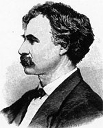

|

|

|
|
|
From his earliest youth, Davis, strongly influenced by his
anti-Jacksonian father, was imbued with a hatred of the
Democratic party. He participated actively in Whig politics
in Alexandria until, after the death of his wife, he moved
to Baltimore in 1849. Quickly reestablishing his legal
career as well as his political affiliations, in 1852 he
gained national fame as one of the Maryland electors for
Winfield Scott for whom he campaigned tirelessly in many
parts of the country. The demise of the Whig party led him
to join the Know-Nothings in 1855, when he was elected to
Congress.
As a representative from a slave state, Davis
distinguished himself as a compelling orator who was
moderate on the question of slavery and passionately devoted
to the Union. Reelected in 1857 and 1859, he was one of the
only two Southern members to vote against the Lecompton
Constitution of Kansas and created a sensation by his vote
for William Pennington, a conservative New Jersey
Republican, for Speaker of the House, an action that ended
the long struggle for the speakership in 1860. Although he
supported the candidacy of John Bell, he welcomed Abraham
Lincoln's nomination and election and was considered a
leading candidate for a cabinet position in the incoming
Republican administration. His Maryland rival Montgomery
Blair obtained the prize, however, leaving Davis sorely
disappointed. He fearlessly denounced the secessionists and
played a major role in saving Maryland for the Union, but
his outspoken views led to his defeat for reelection in
1861.
Although temporarily out of office, Davis continued his
efforts on behalf of the Union and became one of the
principal spokesmen for the radical Unionist faction in
Maryland. Won over to the cause of emancipation, he
relentlessly labored for the abolition of slavery in the
state and finally overcame the opposition of both Democrats
and conservative Unionists. When in 1863 he was reelected to
Congress, he was made chairman of the Committee on Foreign
Relations and of the Select Committee on Rebellious States,
which enabled him to challenge Lincoln's Reconstruction
program. Dissatisfied with the President's Ten Percent Plan,
he sought to substitute for it the Wade-Davis Bill, a
measure requiring an oath of loyalty of 50 percent of the
white male citizens registered voters before elections for a
new state convention in the seceded states could be held.
Only those able to subscribe to an ironclad oath of past
loyalty would be enfranchised, and slavery would be
abolished. When Lincoln pocketed the measure and published
an explanation of his veto, the infuriated Davis, who had
long criticized the President for exceeding his
constitutional powers, wrote the Wade-Davis Manifesto in
which he accused Lincoln of holding the votes of states
reorganized under his plan "at the dictation of his personal
ambition." Together with other radicals, the Maryland
representative also attempted to displace the Emancipator as
the head of the Unionist ticket. But the manifesto, issued
as it was in the midst of the 1864 presidential campaign,
was generally condemned. After George B. McClellan's
nomination on a Democratic peace ticket and the capture of
Atlanta, the effort to displace Lincoln collapsed, and Davis
was eventually induced to lend his support to the Union
cause, although he himself was not renominated for his House
seat.
During the last session of the Thirty-eighth Congress,
Davis succeeded in inducing the House to pass a resolution
criticizing the administration's Mexican policy but failed
to have his colleagues adopt a modified version of the
Wade-Davis Bill, so the Reconstruction problem was unsettled
when he left Congress.
After the accession of Andrew Johnson, in company with
other radicals, Davis at first sought to win the cooperation
of the new President and then sharply turned against him.
When in December 1865 the Marylander suddenly died of
pneumonia, Congress held an official memorial service for
him, a signal honor for a statesman no longer a member of
the House.
Davis' powerful oratory, his successful struggle for the
Union and emancipation in Maryland, and his contribution to
the developing congressional policy of Reconstruction marked
him as one of the influential radicals of the time.
Source: Christopher Bates for the History 139A website
|